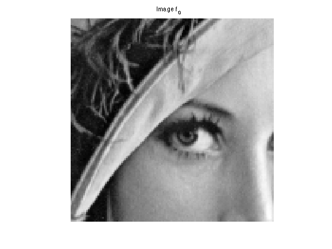
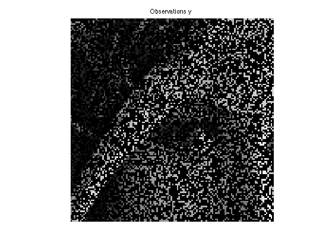
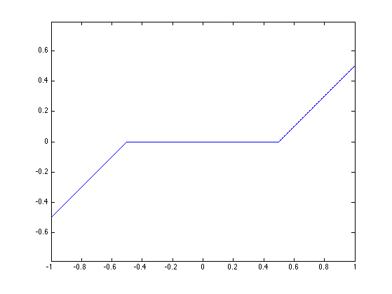
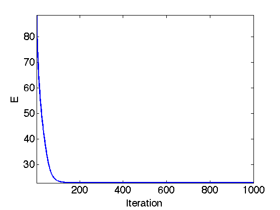
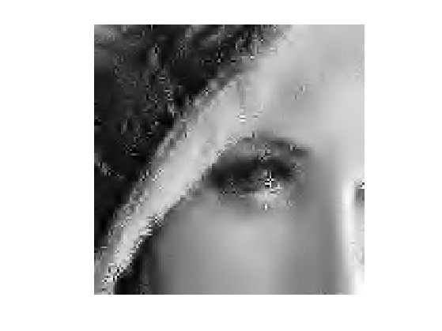
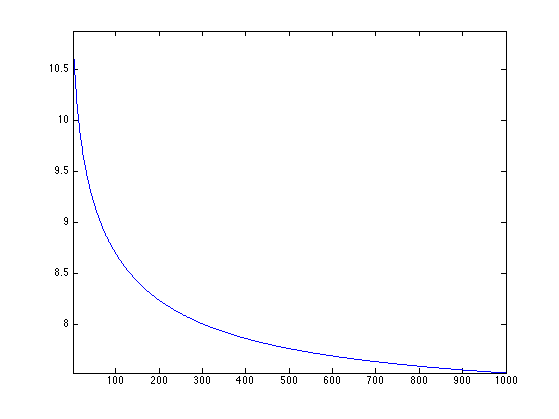
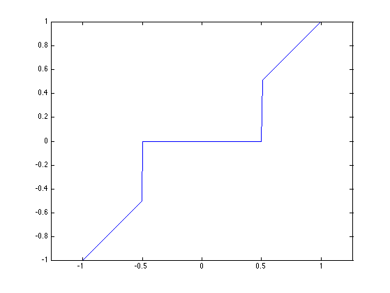
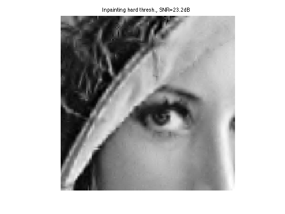

Inpainting using Sparse Regularization
This numerical tour explores the use of sparse energies to regularize the image inpaiting problem.
Contents
Installing toolboxes and setting up the path.
You need to download the following files: signal toolbox and general toolbox.
You need to unzip these toolboxes in your working directory, so that you have toolbox_signal and toolbox_general in your directory.
For Scilab user: you must replace the Matlab comment '%' by its Scilab counterpart '//'.
Recommandation: You should create a text file named for instance numericaltour.sce (in Scilab) or numericaltour.m (in Matlab) to write all the Scilab/Matlab command you want to execute. Then, simply run exec('numericaltour.sce'); (in Scilab) or numericaltour; (in Matlab) to run the commands.
Execute this line only if you are using Matlab.
getd = @(p)path(p,path); % scilab users must *not* execute this
Then you can add the toolboxes to the path.
getd('toolbox_signal/'); getd('toolbox_general/');
Here we consider inpainting of damaged observation without noise.
Sparse Regularization
This tour consider measurements \(y=\Phi f_0 + w\) where \(\Phi\) is a masking operator and \(w\) is an additive noise.
This tour is focussed on using sparsity to recover an image from the measurements \(y\). It considers a synthesis-based regularization, that compute a sparse set of coefficients \( (a_m^{\star})_m \) in a frame \(\Psi = (\psi_m)_m\) that solves \[a^{\star} \in \text{argmin}_a \: \frac{1}{2}\|y-\Phi \Psi a\|^2 + \lambda J(a)\]
where \(\lambda\) should be adapted to the noise level \(\|w\|\). Since in this tour we consider damaged observation without noise, i.e. \(w=0\), we use either a very small value of \(\lambda\), or we decay its value through the iterations of the recovery process.
Here we used the notation \[\Psi a = \sum_m a_m \psi_m\] to indicate the reconstruction operator, and \(J(a)\) is the \(\ell^1\) sparsity prior \[J(a)=\sum_m \|a_m\|.\]
Missing Pixels and Inpainting
Inpainting corresponds to filling holes in images. This corresponds to a linear ill posed inverse problem.
You might want to do first the numerical tour Variational image inpaiting that use Sobolev and TV priors to performs the inpainting.
First we load the image to be inpainted.
n = 128;
name = 'lena';
f0 = load_image(name);
f0 = rescale(crop(f0,n));
Display it.
clf;
imageplot(f0, 'Image f_0');
 Amount of removed pixels.
rho = .7;
Then we construct a mask \(\Omega\) made of random pixel locations.
Omega = zeros(n,n); sel = randperm(n^2); Omega(sel(1:round(rho*n^2))) = 1;
The damaging operator put to zeros the pixel locations \(x\) for which \(\Omega(x)=1\)
Important: Scilab users have to create a file Phi.m to implement this function.
if using_matlab() Phi = @(f,Omega)f.*(1-Omega); end
The damaged observations reads \(y = \Phi f_0\).
y = Phi(f0,Omega);
Display the observations.
clf;
imageplot(y, 'Observations y');
 Soft Thresholding in a Basis
The soft thresholding operator is at the heart of \(\ell^1\) minimization schemes. It can be applied to coefficients \(a\), or to an image \(f\) in an ortho-basis.
The soft thresholding is a 1-D functional that shrinks the value of coefficients. \[ s_T(u)=\max(0,1-T/|u|)u \]
Define a shortcut for this soft thresholding 1-D functional.
Important: Scilab users have to create a file SoftThresh.m to implement this function.
if using_matlab() SoftThresh = @(x,T)x.*max( 0, 1-T./max(abs(x),1e-10) ); end
Display a curve of the 1D soft thresholding.
clf;
T = linspace(-1,1,1000);
plot( T, SoftThresh(T,.5) );
axis('equal');
 Note that the function SoftThresh can also be applied to vector (because of Matlab/Scilab vectorialized computation), which defines an operator on coefficients: \[ S_T(a) = ( s_T(a_m) )_m. \]
In the next section, we use an orthogonal wavelet basis \(\Psi\).
We set the parameters of the wavelet transform.
Jmax = log2(n)-1; Jmin = Jmax-3;
Shortcut for \(\Psi\) and \(\Psi^*\) in the orthogonal case.
Important: Scilab users have to create files Psi.m and PsiS.m to implement this function.
options.ti = 0; % use orthogonality. if using_matlab() Psi = @(a)perform_wavelet_transf(a, Jmin, -1,options); PsiS = @(f)perform_wavelet_transf(f, Jmin, +1,options); end
The soft thresholding opterator in the basis \(\Psi\) is defined as \[S_T^\Psi(f) = \sum_m s_T( \langle f,\psi_m \rangle ) \psi_m \]
It thus corresponds to applying the transform \(\Psi^*\), thresholding the coefficients using \(S_T\) and then undoing the transform using \(\Psi\). \[ S_T^\Psi(f) = \Psi \circ S_T \circ \Psi^*\]
Important: Scilab users have to create a file SoftThreshPsi.m to implement this function.
if using_matlab() SoftThreshPsi = @(f,T)Psi(SoftThresh(PsiS(f),T)); end
This soft thresholding corresponds to a denoising operator.
clf; imageplot( clamp(SoftThreshPsi(f0,.1)) );
Inpainting using Orthogonal Wavelet Sparsity
If \(\Psi\) is an orthogonal basis, a change of variable shows that the synthesis prior is also an analysis prior, that reads \[f^{\star} \in \text{argmin}_f \: E(f) = \frac{1}{2}\|y-\Phi f\|^2 + \lambda \sum_m \|\langle f,\psi_m \rangle\|. \]
To solve this non-smooth optimization problem, one can use forward-backward splitting, also known as iterative soft thresholding.
It computes a series of images \(f^{(\ell)}\) defined as \[ f^{(\ell+1)} = S_{\tau\lambda}^{\Psi}( f^{(\ell)} - \tau \Phi^{*} (\Phi f^{(\ell)} - y) ) \]
Set up the value of the threshold.
lambda = .03;
In our setting, we have \( \Phi^* = \Phi \) which is an operator of norm 1.
For \(f^{(\ell)}\) to converge to a solution of the problem, the gradient step size should be chosen as \[\tau < \frac{2}{\|\Phi^* \Phi\|} = 2\]
In the following we use: \[\tau = 1\]
Since we use \( \tau=1 \) and \( \Phi = \Phi^* = \text{diag}(1-\Omega) \), the gradient descent step is a projection on the inpainting constraint \[ C = \{ f \backslash \forall \Omega(x)=0, f(x)=y(x) \} \] One thus has \[ f - \tau \Phi^{*} (\Phi f - y) = \text{Proj}_C(f) \]
For the sake of simplicity, we define a shortcut for this projection operator.
Important: Scilab users have to create a file ProjC.m to implement this function.
if using_matlab() ProjC = @(f,Omega)Omega.*f + (1-Omega).*y; end
Each iteration of the forward-backward (iterative thresholding) algorithm thus reads: \[ f^{(\ell+1)} = S_{\lambda}^\Psi( \text{Proj}_C(f^{(\ell)}) ). \]
Initialize the iterations.
fSpars = y;
First step: gradient descent.
fSpars = ProjC(fSpars,Omega);
Second step: denoise the solution by thresholding.
fSpars = SoftThreshPsi( fSpars, lambda );
Exercice 1: (check the solution) Perform the iterative soft thresholding. Monitor the decay of the energy \(E\) you are minimizing.
exo1;
Display the result.
clf; imageplot(clamp(fSpars));
Exercice 2: (check the solution) Since there is no noise, one should in theory takes \(\lambda \rightarrow 0\). To do this, decay the value of \(\lambda\) through the iterations.
exo2;
Inpainting using Translation Invariant Wavelet Sparsity
Orthogonal sparsity performs a poor regularization because of the lack of translation invariance. This regularization is enhanced by considering \(\Psi\) as a redundant tight frame of translation invariant wavelets.
One thus looks for optimal coefficients \(a^\star\) that solves \[a^{\star} \in \text{argmin}_a \: E(a) = \frac{1}{2}\|y-\Phi \Psi a\|^2 + \lambda J(a)\]
Important: The operator \(\Psi^*\) is the forward translation invariant wavele transform. It computes the inner product with the unit norm wavelet atoms: \[ (\Psi^* f)_m = \langle f,\psi_m \rangle \quad \text{with} \quad \|\psi_m\|=1. \]
The reconstruction operator \(\Xi\) satisfies \( \Xi \Psi^* f = f \), and is the pseudo inverse of the analysis operator \( \Xi = (\Psi^*)^+ \).
For our algorithm, we will need to use \(\Psi\) and not \(\Xi\). Lukily, for the wavelet transform, one has \[ \Xi = \Psi \text{diag(U)} f \] where \(U_m\) account for the redundancy of the scale of the atom \(\psi_m\).
Compute the scaling factor (inverse of the redundancy).
J = Jmax-Jmin+1; u = [4^(-J) 4.^(-floor(J+2/3:-1/3:1)) ]; U = repmat( reshape(u,[1 1 length(u)]), [n n 1] );
Value of the regularization parameter.
lambda = .01;
Shortcut for the wavelet transform and the reconstruction.
Important: Scilab users have to create files Xi.m, PsiS.m and Psi.m to implement this function.
options.ti = 1; % use translation invariance if using_matlab() Xi = @(a)perform_wavelet_transf(a, Jmin, -1,options); PsiS = @(f)perform_wavelet_transf(f, Jmin, +1,options); Psi = @(a)Xi(a./U); end
The forward-backward algorithm now compute a series of wavelet coefficients \(a^{(\ell)}\) computed as \[a^{(\ell+1)} = S_{\tau\lambda}( a^{(\ell)} + \Psi^*\Phi( y - \Phi\Psi a^{(\ell)} ) ). \]
The soft thresholding is defined as: \[\forall m, \quad S_T(a)_m = \max(0, 1-T/\|a_m\|)a_m. \]
The step size should satisfy: \[\tau < \frac{2}{\|\Psi\Phi \|} \leq 2 \min( u ). \]
tau = 1.9*min(u);
Initialize the wavelet coefficients with those of the previous reconstruction.
a = U.*PsiS(fSpars);
Gradient descent.
fTI = Psi(a); a = a + tau*PsiS( Phi( y-Phi(fTI,Omega),Omega ) );
Soft threshold.
a = SoftThresh( a, lambda*tau );
Exercice 3: (check the solution) Perform the iterative soft thresholding. Monitor the decay of the energy \(E\).
exo3;
Perform the reconstruction.
fTI = Psi(a);
Display the result.
clf; imageplot(clamp(fTI));
Exercice 4: (check the solution) Perform the iteration with a decaying value of \(\lambda\)
exo4;
Inpainting using Iterative Hard Thresholding
To improve the sparsity of the solution, it is possible to replace the soft thresholding by a hard threshdoling. In this case, the resulting algorihtm does not perform anymore a variational minimization of an energy.
The hard thresholding is defined as \(h_T(x)=0\) if \(-T < x < T\) and \(h_T(x)=x\) otherwise. It thus defines a thresholding operator of wavelet coefficients as \(H_T(a)_m = h_T(a_m)\).
Define a shortcut for this vectorialized hard thresholding
Important: Scilab users have to create a file HardThresh.m to implement this function.
if using_matlab() HardThresh = @(x,t)x.*(abs(x)>t); end
Display a curve of the 1-D Hard thresholding.
t = linspace(-1,1,1000);
plot( t, HardThresh(t,.5) );
axis('equal');
 The hard thresholding in the translation invariant wavelet basis \(\Psi\) reads \[ H_T^\Psi(f) = \Xi \circ H_T \circ \Psi^* (f) \] where \(\Xi = (\Phi^*)^+\) is the reconstruction operator.
We follow the MCA paradigm of Jean-Luc Starck, that alternates between a gradient descent step and a hard thresholding denoising, using a decaying threshold. \[f^{(\ell+1)} = H_{\tau\lambda_\ell}^\Psi( f^{(\ell)} - \tau \Phi^*(\Phi f^{(\ell)} - y) ). \]
Number of iterations.
niter = 500;
List of thresholds. One must start by a large enough initial threshold.
lambda_list = linspace(1,0,niter);
Initialization.
fHard = y;
Gradient descent.
fHard = ProjC(fHard,Omega);
Hard threshold (here \(\lambda=\lambda_0\)) is used).
fHard = Xi( HardThresh( PsiS(fHard), tau*lambda_list(1) ) );
Exercice 5: (check the solution) Perform the iteration with a decaying value of \(\lambda\)
exo5;